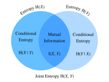

Lý Thuyết Thông Tin¶
Vũ trụ tràn ngập thông tin. Thông tin cung cấp một ngôn ngữ chung vượt qua các ranh giới ngành học: từ Sonnet của Shakespeare đến bài báo của các nhà nghiên cứu trên Cornell ArXiv, từ bản in Starry Night của Van Gogh đến Symphony No. 5 của Beethoven, từ ngôn ngữ lập trình đầu tiên Plankalkül đến các thuật toán machine learning hiện đại. Mọi thứ đều phải tuân theo các quy tắc của lý thuyết thông tin, bất kể định dạng. Với lý thuyết thông tin, ta có thể đo và so sánh lượng thông tin có trong các tín hiệu khác nhau. Trong phần này, chúng ta sẽ khảo sát các khái niệm nền tảng của lý thuyết thông tin và các ứng dụng của lý thuyết thông tin trong machine learning.
Trước khi bắt đầu, hãy phác thảo quan hệ giữa machine learning và lý thuyết thông tin. Machine learning nhằm trích xuất các tín hiệu thú vị từ dữ liệu và đưa ra các dự đoán quan trọng. Mặt khác, lý thuyết thông tin nghiên cứu việc mã hóa, giải mã, truyền và thao tác thông tin. Do đó, lý thuyết thông tin cung cấp ngôn ngữ nền tảng để thảo luận về xử lý thông tin trong các hệ thống machine learning. Ví dụ, nhiều ứng dụng machine learning dùng mất mát cross-entropy như mô tả trong sec_softmax. Mất mát này có thể được suy ra trực tiếp từ các cân nhắc lý thuyết thông tin.
Thông Tin¶
Hãy bắt đầu với "linh hồn" của lý thuyết thông tin: thông tin. Thông tin có thể được mã hóa trong bất cứ thứ gì với một chuỗi cụ thể gồm một hoặc nhiều định dạng mã hóa. Giả sử ta giao cho mình nhiệm vụ cố gắng định nghĩa một khái niệm thông tin. Điểm khởi đầu của ta có thể là gì?
Hãy xét thí nghiệm tưởng tượng sau. Ta có một người bạn với một bộ bài. Người đó sẽ xáo bộ bài, lật một số lá, và nói cho ta các phát biểu về các lá bài. Ta sẽ cố gắng đánh giá nội dung thông tin của từng phát biểu.
Trước hết, người bạn lật một lá bài và nói: "Tôi thấy một lá bài." Điều này không cung cấp cho ta thông tin nào cả. Ta vốn đã chắc chắn rằng điều này sẽ xảy ra, nên ta hy vọng thông tin bằng không.
Tiếp theo, người bạn lật một lá bài và nói: "Tôi thấy một lá cơ." Điều này cung cấp cho ta một chút thông tin, nhưng thực tế chỉ có \(4\) chất bài khác nhau có thể xảy ra, mỗi chất có xác suất như nhau, nên ta không ngạc nhiên trước kết quả này. Ta hy vọng rằng bất kể thước đo thông tin là gì, biến cố này nên có nội dung thông tin thấp.
Tiếp theo, người bạn lật một lá bài và nói: "Đây là lá \(3\) bích." Đây là nhiều thông tin hơn. Thật vậy, có \(52\) kết quả có thể xảy ra với xác suất như nhau, và người bạn cho ta biết đó là kết quả nào. Điều này nên là một lượng thông tin trung bình.
Hãy đẩy điều này đến cực hạn logic. Giả sử cuối cùng người bạn lật mọi lá trong bộ bài và đọc toàn bộ chuỗi của bộ bài đã xáo. Có \(52!\) thứ tự khác nhau của bộ bài, một lần nữa đều có xác suất như nhau, nên ta cần rất nhiều thông tin để biết đó là thứ tự nào.
Bất kỳ khái niệm thông tin nào ta phát triển cũng phải phù hợp với trực giác này. Thật vậy, trong các phần tiếp theo, ta sẽ học cách tính rằng các biến cố này lần lượt có \(0\textrm{ bits}\), \(2\textrm{ bits}\), \(~5.7\textrm{ bits}\) và \(~225.6\textrm{ bits}\) thông tin.
Nếu đọc qua các thí nghiệm tưởng tượng này, ta thấy một ý tưởng tự nhiên. Là điểm khởi đầu, thay vì quan tâm đến tri thức, ta có thể xây dựng trên ý tưởng rằng thông tin biểu diễn mức độ bất ngờ hoặc khả năng trừu tượng của biến cố. Ví dụ, nếu muốn mô tả một biến cố bất thường, ta cần rất nhiều thông tin. Với một biến cố phổ biến, ta có thể không cần nhiều thông tin.
Năm 1948, Claude E. Shannon công bố A Mathematical Theory of Communication [Shannon.1948], đặt nền móng cho lý thuyết thông tin. Trong bài viết của mình, Shannon lần đầu giới thiệu khái niệm entropy thông tin. Chúng ta sẽ bắt đầu hành trình tại đây.
Tự Thông Tin¶
Vì thông tin hiện thân cho khả năng trừu tượng của một biến cố, làm thế nào để ta ánh xạ khả năng đó thành số bit? Shannon giới thiệu thuật ngữ bit làm đơn vị thông tin, vốn ban đầu do John Tukey tạo ra. Vậy "bit" là gì và vì sao ta dùng nó để đo thông tin? Về lịch sử, một bộ phát cổ chỉ có thể gửi hoặc nhận hai loại mã: \(0\) và \(1\). Thật vậy, mã hóa nhị phân vẫn được sử dụng phổ biến trên mọi máy tính số hiện đại. Theo cách này, mọi thông tin được mã hóa bằng một chuỗi các \(0\) và \(1\). Do đó, một chuỗi chữ số nhị phân độ dài \(n\) chứa \(n\) bit thông tin.
Bây giờ, giả sử với bất kỳ chuỗi mã nào, mỗi \(0\) hoặc \(1\) xuất hiện với xác suất \(\frac{1}{2}\). Do đó, một biến cố \(X\) với một chuỗi mã độ dài \(n\) xảy ra với xác suất \(\frac{1}{2^n}\). Đồng thời, như đã nhắc trước đó, chuỗi này chứa \(n\) bit thông tin. Vậy ta có thể tổng quát hóa thành một hàm toán học chuyển xác suất \(p\) thành số bit không? Shannon đưa ra câu trả lời bằng cách định nghĩa tự thông tin
là số bit thông tin ta nhận được cho biến cố \(X\) này. Lưu ý rằng trong phần này ta sẽ luôn dùng logarit cơ số 2. Để đơn giản, phần còn lại của mục này sẽ bỏ chỉ số dưới 2 trong ký hiệu logarit, tức \(\log(.)\) luôn chỉ \(\log_2(.)\). Ví dụ, mã "0010" có tự thông tin
Ta có thể tính tự thông tin như minh họa bên dưới. Trước đó, hãy nhập tất cả các gói cần thiết trong phần này.
#@tab mxnet
from mxnet import np
from mxnet.metric import NegativeLogLikelihood
from mxnet.ndarray import nansum
import random
def self_information(p):
return -np.log2(p)
self_information(1 / 64)
#@tab pytorch
import torch
from torch.nn import NLLLoss
def nansum(x):
# Define nansum, as pytorch does not offer it inbuilt.
return x[~torch.isnan(x)].sum()
def self_information(p):
return -torch.log2(torch.tensor(p)).item()
self_information(1 / 64)
#@tab tensorflow
import tensorflow as tf
def log2(x):
return tf.math.log(x) / tf.math.log(2.)
def nansum(x):
return tf.reduce_sum(tf.where(tf.math.is_nan(
x), tf.zeros_like(x), x), axis=-1)
def self_information(p):
return -log2(tf.constant(p)).numpy()
self_information(1 / 64)
Entropy¶
Vì tự thông tin chỉ đo thông tin của một biến cố rời rạc đơn lẻ, ta cần một thước đo tổng quát hơn cho bất kỳ biến ngẫu nhiên nào có phân phối rời rạc hoặc liên tục.
Động Cơ Cho Entropy¶
Hãy cố gắng cụ thể hóa điều ta muốn. Đây sẽ là một phát biểu phi hình thức của những gì được gọi là các tiên đề entropy Shannon. Hóa ra tập hợp các phát biểu theo lẽ thường sau đây buộc ta đi đến một định nghĩa duy nhất của thông tin. Một phiên bản hình thức của các tiên đề này, cùng với một số tiên đề khác, có thể tìm thấy trong Csiszar.2008.
- Thông tin ta thu được khi quan sát một biến ngẫu nhiên không phụ thuộc vào cách ta gọi các phần tử, hoặc sự hiện diện của các phần tử bổ sung có xác suất bằng không.
- Thông tin ta thu được khi quan sát hai biến ngẫu nhiên không nhiều hơn tổng thông tin ta thu được khi quan sát chúng riêng rẽ. Nếu chúng độc lập, thì nó đúng bằng tổng.
- Thông tin thu được khi quan sát các biến cố (gần như) chắc chắn là (gần như) bằng không.
Dù việc chứng minh sự thật này nằm ngoài phạm vi văn bản của chúng ta, điều quan trọng là biết rằng nó xác định duy nhất dạng mà entropy phải có. Sự mơ hồ duy nhất mà các tiên đề này cho phép là lựa chọn đơn vị nền tảng, thường được chuẩn hóa bằng cách chọn như ta đã thấy trước đó: thông tin do một lần tung đồng xu công bằng cung cấp là một bit.
Định Nghĩa¶
Với bất kỳ biến ngẫu nhiên \(X\) nào tuân theo một phân phối xác suất \(P\) với hàm mật độ xác suất (p.d.f.) hoặc hàm khối xác suất (p.m.f.) \(p(x)\), ta đo lượng thông tin kỳ vọng thông qua entropy (hoặc entropy Shannon)
Cụ thể, nếu \(X\) rời rạc, $\(H(X) = - \sum_i p_i \log p_i \textrm{, where } p_i = P(X_i).\)$
Ngược lại, nếu \(X\) liên tục, ta cũng gọi entropy là entropy vi phân
Ta có thể định nghĩa entropy như bên dưới.
#@tab mxnet
def entropy(p):
entropy = - p * np.log2(p)
# Operator `nansum` will sum up the non-nan number
out = nansum(entropy.as_nd_ndarray())
return out
entropy(np.array([0.1, 0.5, 0.1, 0.3]))
#@tab pytorch
def entropy(p):
entropy = - p * torch.log2(p)
# Operator `nansum` will sum up the non-nan number
out = nansum(entropy)
return out
entropy(torch.tensor([0.1, 0.5, 0.1, 0.3]))
#@tab tensorflow
def entropy(p):
return nansum(- p * log2(p))
entropy(tf.constant([0.1, 0.5, 0.1, 0.3]))
Diễn Giải¶
Bạn có thể tò mò: trong định nghĩa entropy :eqref:eq_ent_def, vì sao ta dùng kỳ vọng của logarit âm? Dưới đây là một số trực giác.
Thứ nhất, vì sao ta dùng hàm logarit \(\log\)? Giả sử \(p(x) = f_1(x) f_2(x) \ldots, f_n(x)\), trong đó mỗi hàm thành phần \(f_i(x)\) độc lập với nhau. Điều này có nghĩa là mỗi \(f_i(x)\) đóng góp độc lập vào tổng thông tin thu được từ \(p(x)\). Như đã thảo luận ở trên, ta muốn công thức entropy có tính cộng trên các biến ngẫu nhiên độc lập. May mắn thay, \(\log\) có thể tự nhiên biến một tích các phân phối xác suất thành tổng các hạng tử riêng lẻ.
Tiếp theo, vì sao ta dùng \(\log\) âm? Về trực giác, các biến cố thường xuyên hơn nên chứa ít thông tin hơn các biến cố ít phổ biến hơn, vì ta thường thu được nhiều thông tin hơn từ một trường hợp bất thường so với một trường hợp thông thường. Tuy nhiên, \(\log\) tăng đơn điệu theo xác suất, và thật ra âm với mọi giá trị trong \([0, 1]\). Ta cần xây dựng một quan hệ giảm đơn điệu giữa xác suất của các biến cố và entropy của chúng, lý tưởng là luôn dương (vì không điều gì ta quan sát nên buộc ta quên đi những gì đã biết). Do đó, ta thêm dấu âm trước hàm \(\log\).
Cuối cùng, hàm kỳ vọng đến từ đâu? Xét một biến ngẫu nhiên \(X\). Ta có thể diễn giải tự thông tin (\(-\log(p)\)) là lượng bất ngờ ta có khi thấy một kết quả cụ thể. Thật vậy, khi xác suất tiến đến không, sự bất ngờ trở thành vô hạn. Tương tự, ta có thể diễn giải entropy là lượng bất ngờ trung bình khi quan sát \(X\). Ví dụ, hãy tưởng tượng một hệ thống máy đánh bạc phát ra các ký hiệu độc lập thống kê \({s_1, \ldots, s_k}\) với các xác suất tương ứng \({p_1, \ldots, p_k}\). Khi đó entropy của hệ thống này bằng tự thông tin trung bình khi quan sát từng đầu ra, tức là
Tính Chất Của Entropy¶
Từ các ví dụ và diễn giải trên, ta có thể suy ra các tính chất sau của entropy :eqref:eq_ent_def. Ở đây, ta gọi \(X\) là một biến cố và \(P\) là phân phối xác suất của \(X\).
-
\(H(X) \geq 0\) với mọi \(X\) rời rạc (entropy có thể âm với \(X\) liên tục).
-
Nếu \(X \sim P\) với p.d.f. hoặc p.m.f. \(p(x)\), và ta cố gắng ước lượng \(P\) bằng một phân phối xác suất mới \(Q\) với p.d.f. hoặc p.m.f. \(q(x)\), thì $\(H(X) = - E_{x \sim P} [\log p(x)] \leq - E_{x \sim P} [\log q(x)], \textrm{ with equality if and only if } P = Q.\)$ Nói cách khác, \(H(X)\) cho một cận dưới của số bit trung bình cần để mã hóa các ký hiệu được rút ra từ \(P\).
-
Nếu \(X \sim P\), thì \(x\) truyền tải lượng thông tin tối đa nếu nó được phân bố đều giữa tất cả các kết quả có thể. Cụ thể, nếu phân phối xác suất \(P\) là rời rạc với \(k\) lớp \(\{p_1, \ldots, p_k \}\), thì $\(H(X) \leq \log(k), \textrm{ with equality if and only if } p_i = \frac{1}{k}, \forall i.\)$ Nếu \(P\) là một biến ngẫu nhiên liên tục, câu chuyện trở nên phức tạp hơn nhiều. Tuy nhiên, nếu ta thêm ràng buộc rằng \(P\) có giá trên một khoảng hữu hạn (với mọi giá trị nằm giữa \(0\) và \(1\)), thì \(P\) có entropy cao nhất nếu nó là phân phối đều trên khoảng đó.
Thông Tin Tương Hỗ¶
Trước đó ta đã định nghĩa entropy của một biến ngẫu nhiên đơn \(X\), vậy entropy của một cặp biến ngẫu nhiên \((X, Y)\) thì sao? Ta có thể nghĩ các kỹ thuật này như đang cố gắng trả lời loại câu hỏi sau: "Thông tin nào được chứa trong \(X\) và \(Y\) cùng nhau so với từng biến riêng lẻ? Có thông tin dư thừa không, hay tất cả đều là duy nhất?"
Trong thảo luận sau, ta luôn dùng \((X, Y)\) làm một cặp biến ngẫu nhiên tuân theo phân phối xác suất đồng thời \(P\) với p.d.f. hoặc p.m.f. \(p_{X, Y}(x, y)\), trong khi \(X\) và \(Y\) lần lượt tuân theo phân phối xác suất \(p_X(x)\) và \(p_Y(y)\).
Entropy Đồng Thời¶
Tương tự entropy của một biến ngẫu nhiên đơn :eqref:eq_ent_def, ta định nghĩa entropy đồng thời \(H(X, Y)\) của một cặp biến ngẫu nhiên \((X, Y)\) là
Chính xác hơn, một mặt, nếu \((X, Y)\) là một cặp biến ngẫu nhiên rời rạc, thì
Mặt khác, nếu \((X, Y)\) là một cặp biến ngẫu nhiên liên tục, thì ta định nghĩa entropy đồng thời vi phân là
Ta có thể nghĩ :eqref:eq_joint_ent_def cho ta biết tổng độ ngẫu nhiên trong cặp biến ngẫu nhiên. Ở hai cực, nếu \(X = Y\) là hai biến ngẫu nhiên giống hệt nhau, thì thông tin trong cặp chính xác là thông tin trong một biến và ta có \(H(X, Y) = H(X) = H(Y)\). Ở cực kia, nếu \(X\) và \(Y\) độc lập thì \(H(X, Y) = H(X) + H(Y)\). Thật vậy, ta luôn có rằng thông tin chứa trong một cặp biến ngẫu nhiên không nhỏ hơn entropy của một trong hai biến ngẫu nhiên và không lớn hơn tổng của cả hai.
Hãy cài đặt entropy đồng thời từ đầu.
#@tab mxnet
def joint_entropy(p_xy):
joint_ent = -p_xy * np.log2(p_xy)
# Operator `nansum` will sum up the non-nan number
out = nansum(joint_ent.as_nd_ndarray())
return out
joint_entropy(np.array([[0.1, 0.5], [0.1, 0.3]]))
#@tab pytorch
def joint_entropy(p_xy):
joint_ent = -p_xy * torch.log2(p_xy)
# Operator `nansum` will sum up the non-nan number
out = nansum(joint_ent)
return out
joint_entropy(torch.tensor([[0.1, 0.5], [0.1, 0.3]]))
#@tab tensorflow
def joint_entropy(p_xy):
joint_ent = -p_xy * log2(p_xy)
# Operator `nansum` will sum up the non-nan number
out = nansum(joint_ent)
return out
joint_entropy(tf.constant([[0.1, 0.5], [0.1, 0.3]]))
Lưu ý rằng đây là cùng một code như trước, nhưng giờ ta diễn giải nó khác đi: làm việc trên phân phối đồng thời của hai biến ngẫu nhiên.
Entropy Có Điều Kiện¶
Entropy đồng thời được định nghĩa ở trên đo lượng thông tin chứa trong một cặp biến ngẫu nhiên. Điều này hữu ích, nhưng thường không phải thứ ta quan tâm. Xét bối cảnh machine learning. Hãy lấy \(X\) là biến ngẫu nhiên (hoặc vector các biến ngẫu nhiên) mô tả các giá trị pixel của một ảnh, và \(Y\) là biến ngẫu nhiên biểu thị nhãn lớp. \(X\) nên chứa lượng thông tin đáng kể: một ảnh tự nhiên là một thứ phức tạp. Tuy nhiên, thông tin chứa trong \(Y\) sau khi ảnh đã được hiển thị nên thấp. Thật vậy, ảnh của một chữ số nên đã chứa thông tin về chữ số đó là gì, trừ khi chữ số không đọc được. Vì vậy, để tiếp tục mở rộng vốn từ vựng về lý thuyết thông tin, ta cần có khả năng lập luận về nội dung thông tin trong một biến ngẫu nhiên có điều kiện trên một biến khác.
Trong lý thuyết xác suất, ta đã thấy định nghĩa xác suất có điều kiện để đo quan hệ giữa các biến. Bây giờ ta muốn định nghĩa tương tự entropy có điều kiện \(H(Y \mid X)\). Ta có thể viết nó là
trong đó \(p(y \mid x) = \frac{p_{X, Y}(x, y)}{p_X(x)}\) là xác suất có điều kiện. Cụ thể, nếu \((X, Y)\) là một cặp biến ngẫu nhiên rời rạc, thì
Nếu \((X, Y)\) là một cặp biến ngẫu nhiên liên tục, thì entropy có điều kiện vi phân được định nghĩa tương tự là
Bây giờ tự nhiên ta hỏi: entropy có điều kiện \(H(Y \mid X)\) liên hệ thế nào với entropy \(H(X)\) và entropy đồng thời \(H(X, Y)\)? Dùng các định nghĩa ở trên, ta có thể biểu diễn điều này gọn gàng:
Điều này có một diễn giải trực giác: thông tin trong \(Y\) khi biết \(X\) (\(H(Y \mid X)\)) giống như thông tin trong cả \(X\) và \(Y\) cùng nhau (\(H(X, Y)\)) trừ đi thông tin đã chứa trong \(X\). Điều này cho ta thông tin trong \(Y\) mà không đồng thời được biểu diễn trong \(X\).
Bây giờ, hãy cài đặt entropy có điều kiện :eqref:eq_cond_ent_def từ đầu.
#@tab mxnet
def conditional_entropy(p_xy, p_x):
p_y_given_x = p_xy/p_x
cond_ent = -p_xy * np.log2(p_y_given_x)
# Operator `nansum` will sum up the non-nan number
out = nansum(cond_ent.as_nd_ndarray())
return out
conditional_entropy(np.array([[0.1, 0.5], [0.2, 0.3]]), np.array([0.2, 0.8]))
#@tab pytorch
def conditional_entropy(p_xy, p_x):
p_y_given_x = p_xy/p_x
cond_ent = -p_xy * torch.log2(p_y_given_x)
# Operator `nansum` will sum up the non-nan number
out = nansum(cond_ent)
return out
conditional_entropy(torch.tensor([[0.1, 0.5], [0.2, 0.3]]),
torch.tensor([0.2, 0.8]))
#@tab tensorflow
def conditional_entropy(p_xy, p_x):
p_y_given_x = p_xy/p_x
cond_ent = -p_xy * log2(p_y_given_x)
# Operator `nansum` will sum up the non-nan number
out = nansum(cond_ent)
return out
conditional_entropy(tf.constant([[0.1, 0.5], [0.2, 0.3]]),
tf.constant([0.2, 0.8]))
Thông Tin Tương Hỗ¶
Với bối cảnh trước đó về các biến ngẫu nhiên \((X, Y)\), bạn có thể tự hỏi: "Bây giờ khi ta biết bao nhiêu thông tin chứa trong \(Y\) nhưng không nằm trong \(X\), ta có thể tương tự hỏi bao nhiêu thông tin được chia sẻ giữa \(X\) và \(Y\) không?" Câu trả lời sẽ là thông tin tương hỗ của \((X, Y)\), mà ta sẽ viết là \(I(X, Y)\).
Thay vì đi thẳng vào định nghĩa hình thức, hãy luyện trực giác bằng cách trước hết cố gắng suy ra một biểu thức cho thông tin tương hỗ hoàn toàn dựa trên các hạng tử ta đã xây dựng trước đó. Ta muốn tìm thông tin được chia sẻ giữa hai biến ngẫu nhiên. Một cách ta có thể thử làm là bắt đầu với toàn bộ thông tin chứa trong cả \(X\) và \(Y\) cùng nhau, rồi loại bỏ các phần không được chia sẻ. Thông tin chứa trong cả \(X\) và \(Y\) cùng nhau được viết là \(H(X, Y)\). Ta muốn trừ khỏi nó thông tin chứa trong \(X\) nhưng không trong \(Y\), và thông tin chứa trong \(Y\) nhưng không trong \(X\). Như ta đã thấy trong phần trước, chúng lần lượt được cho bởi \(H(X \mid Y)\) và \(H(Y \mid X)\). Do đó, ta có thông tin tương hỗ nên là
Thật vậy, đây là một định nghĩa hợp lệ cho thông tin tương hỗ. Nếu khai triển các định nghĩa của các hạng tử này và kết hợp chúng, một chút đại số cho thấy nó giống với
Ta có thể tóm tắt tất cả các quan hệ này trong hình fig_mutual_information. Đây là một bài kiểm tra trực giác rất tốt để xem vì sao các phát biểu sau cũng đều tương đương với \(I(X, Y)\).
- \(H(X) - H(X \mid Y)\)
- \(H(Y) - H(Y \mid X)\)
- \(H(X) + H(Y) - H(X, Y)\)

Theo nhiều cách, ta có thể nghĩ thông tin tương hỗ :eqref:eq_mut_ent_def là một mở rộng có nguyên tắc của hệ số tương quan đã thấy trong sec_random_variables. Điều này cho phép ta hỏi không chỉ về các quan hệ tuyến tính giữa các biến, mà còn về lượng thông tin tối đa được chia sẻ giữa hai biến ngẫu nhiên thuộc bất kỳ loại nào.
Bây giờ, hãy cài đặt thông tin tương hỗ từ đầu.
#@tab mxnet
def mutual_information(p_xy, p_x, p_y):
p = p_xy / (p_x * p_y)
mutual = p_xy * np.log2(p)
# Operator `nansum` will sum up the non-nan number
out = nansum(mutual.as_nd_ndarray())
return out
mutual_information(np.array([[0.1, 0.5], [0.1, 0.3]]),
np.array([0.2, 0.8]), np.array([[0.75, 0.25]]))
#@tab pytorch
def mutual_information(p_xy, p_x, p_y):
p = p_xy / (p_x * p_y)
mutual = p_xy * torch.log2(p)
# Operator `nansum` will sum up the non-nan number
out = nansum(mutual)
return out
mutual_information(torch.tensor([[0.1, 0.5], [0.1, 0.3]]),
torch.tensor([0.2, 0.8]), torch.tensor([[0.75, 0.25]]))
#@tab tensorflow
def mutual_information(p_xy, p_x, p_y):
p = p_xy / (p_x * p_y)
mutual = p_xy * log2(p)
# Operator `nansum` will sum up the non-nan number
out = nansum(mutual)
return out
mutual_information(tf.constant([[0.1, 0.5], [0.1, 0.3]]),
tf.constant([0.2, 0.8]), tf.constant([[0.75, 0.25]]))
Tính Chất Của Thông Tin Tương Hỗ¶
Thay vì ghi nhớ định nghĩa của thông tin tương hỗ :eqref:eq_mut_ent_def, bạn chỉ cần nhớ các tính chất đáng chú ý của nó:
- Thông tin tương hỗ đối xứng, tức \(I(X, Y) = I(Y, X)\).
- Thông tin tương hỗ không âm, tức \(I(X, Y) \geq 0\).
- \(I(X, Y) = 0\) khi và chỉ khi \(X\) và \(Y\) độc lập. Ví dụ, nếu \(X\) và \(Y\) độc lập, thì biết \(Y\) không cung cấp bất kỳ thông tin nào về \(X\) và ngược lại, nên thông tin tương hỗ của chúng bằng không.
- Mặt khác, nếu \(X\) là một hàm khả nghịch của \(Y\), thì \(Y\) và \(X\) chia sẻ toàn bộ thông tin và $\(I(X, Y) = H(Y) = H(X).\)$
Thông Tin Tương Hỗ Theo Điểm¶
Khi làm việc với entropy ở đầu chương này, ta có thể đưa ra một diễn giải của \(-\log(p_X(x))\) là mức độ bất ngờ của ta với kết quả cụ thể. Ta có thể đưa ra một diễn giải tương tự cho hạng logarit trong thông tin tương hỗ, thường được gọi là thông tin tương hỗ theo điểm:
Ta có thể nghĩ :eqref:eq_pmi_def như phép đo xem tổ hợp cụ thể của các kết quả \(x\) và \(y\) có khả năng xảy ra nhiều hơn hoặc ít hơn bao nhiêu so với điều ta kỳ vọng nếu các kết quả ngẫu nhiên độc lập. Nếu nó lớn và dương, thì hai kết quả cụ thể này xảy ra thường xuyên hơn nhiều so với ngẫu nhiên (lưu ý: mẫu số là \(p_X(x) p_Y(y)\), là xác suất của hai kết quả nếu chúng độc lập), trong khi nếu nó lớn và âm, nó biểu thị hai kết quả xảy ra ít hơn nhiều so với điều ta kỳ vọng theo ngẫu nhiên.
Điều này cho phép ta diễn giải thông tin tương hỗ :eqref:eq_mut_ent_def là lượng trung bình mà ta bị bất ngờ khi thấy hai kết quả xảy ra cùng nhau, so với điều ta kỳ vọng nếu chúng độc lập.
Ứng Dụng Của Thông Tin Tương Hỗ¶
Thông tin tương hỗ có thể hơi trừu tượng trong định nghĩa thuần túy của nó, vậy nó liên quan thế nào đến machine learning? Trong xử lý ngôn ngữ tự nhiên, một trong những bài toán khó nhất là giải quyết nhập nhằng, tức vấn đề nghĩa của một từ không rõ từ ngữ cảnh. Ví dụ, gần đây một tiêu đề trên báo đưa tin rằng "Amazon đang cháy". Bạn có thể tự hỏi liệu công ty Amazon có một tòa nhà đang cháy, hay rừng mưa Amazon đang cháy.
Trong trường hợp này, thông tin tương hỗ có thể giúp ta giải quyết sự nhập nhằng này. Trước hết ta tìm nhóm các từ có thông tin tương hỗ tương đối lớn với công ty Amazon, chẳng hạn e-commerce, technology và online. Thứ hai, ta tìm một nhóm từ khác có thông tin tương hỗ tương đối lớn với rừng mưa Amazon, chẳng hạn rain, forest và tropical. Khi cần khử nhập nhằng "Amazon", ta có thể so sánh nhóm nào xuất hiện nhiều hơn trong ngữ cảnh của từ Amazon. Trong trường hợp này, bài báo sẽ tiếp tục mô tả khu rừng và làm rõ ngữ cảnh.
Phân Kỳ Kullback-Leibler¶
Như đã thảo luận trong sec_linear-algebra, ta có thể dùng chuẩn để đo khoảng cách giữa hai điểm trong không gian có số chiều bất kỳ. Ta muốn có thể làm một nhiệm vụ tương tự với các phân phối xác suất. Có nhiều cách để thực hiện điều này, nhưng lý thuyết thông tin cung cấp một trong những cách đẹp nhất. Bây giờ ta khảo sát phân kỳ Kullback-Leibler (KL), cung cấp một cách đo xem hai phân phối có gần nhau hay không.
Định Nghĩa¶
Cho một biến ngẫu nhiên \(X\) tuân theo phân phối xác suất \(P\) với p.d.f. hoặc p.m.f. \(p(x)\), và ta ước lượng \(P\) bằng một phân phối xác suất khác \(Q\) với p.d.f. hoặc p.m.f. \(q(x)\). Khi đó phân kỳ Kullback-Leibler (KL) (hoặc entropy tương đối) giữa \(P\) và \(Q\) là
Như với thông tin tương hỗ theo điểm :eqref:eq_pmi_def, ta một lần nữa có thể đưa ra một diễn giải cho hạng logarit: \(-\log \frac{q(x)}{p(x)} = -\log(q(x)) - (-\log(p(x)))\) sẽ lớn và dương nếu ta thấy \(x\) thường xuyên hơn nhiều dưới \(P\) so với điều ta kỳ vọng với \(Q\), và lớn và âm nếu ta thấy kết quả đó ít hơn nhiều so với kỳ vọng. Theo cách này, ta có thể diễn giải nó là sự bất ngờ tương đối của ta khi quan sát kết quả so với mức độ bất ngờ nếu quan sát nó từ phân phối tham chiếu.
Hãy cài đặt phân kỳ KL từ đầu.
#@tab mxnet
def kl_divergence(p, q):
kl = p * np.log2(p / q)
out = nansum(kl.as_nd_ndarray())
return out.abs().asscalar()
#@tab pytorch
def kl_divergence(p, q):
kl = p * torch.log2(p / q)
out = nansum(kl)
return out.abs().item()
#@tab tensorflow
def kl_divergence(p, q):
kl = p * log2(p / q)
out = nansum(kl)
return tf.abs(out).numpy()
Tính Chất Của Phân Kỳ KL¶
Hãy xem một số tính chất của phân kỳ KL :eqref:eq_kl_def.
- Phân kỳ KL không đối xứng, tức tồn tại \(P,Q\) sao cho $\(D_{\textrm{KL}}(P\|Q) \neq D_{\textrm{KL}}(Q\|P).\)$
- Phân kỳ KL không âm, tức $\(D_{\textrm{KL}}(P\|Q) \geq 0.\)$ Lưu ý rằng đẳng thức chỉ xảy ra khi \(P = Q\).
- Nếu tồn tại một \(x\) sao cho \(p(x) > 0\) và \(q(x) = 0\), thì \(D_{\textrm{KL}}(P\|Q) = \infty\).
- Có một quan hệ gần gũi giữa phân kỳ KL và thông tin tương hỗ. Ngoài quan hệ thể hiện trong fig_mutual_information, \(I(X, Y)\) cũng tương đương về mặt số học với các hạng sau:
- \(D_{\textrm{KL}}(P(X, Y) \ \| \ P(X)P(Y))\);
- \(E_Y \{ D_{\textrm{KL}}(P(X \mid Y) \ \| \ P(X)) \}\);
- \(E_X \{ D_{\textrm{KL}}(P(Y \mid X) \ \| \ P(Y)) \}\).
Với hạng đầu tiên, ta diễn giải thông tin tương hỗ là phân kỳ KL giữa \(P(X, Y)\) và tích của \(P(X)\) và \(P(Y)\), do đó là một thước đo mức độ khác nhau giữa phân phối đồng thời và phân phối nếu chúng độc lập. Với hạng thứ hai, thông tin tương hỗ cho ta mức giảm độ bất định trung bình về \(Y\) khi biết giá trị của phân phối của \(X\). Hạng thứ ba cũng tương tự.
Ví Dụ¶
Hãy đi qua một ví dụ đồ chơi để thấy rõ tính không đối xứng.
Trước hết, hãy sinh và sắp xếp ba tensor độ dài \(10,000\): một tensor mục tiêu \(p\) tuân theo phân phối chuẩn \(N(0, 1)\), và hai tensor ứng viên \(q_1\) và \(q_2\) lần lượt tuân theo các phân phối chuẩn \(N(-1, 1)\) và \(N(1, 1)\).
#@tab mxnet
random.seed(1)
nd_len = 10000
p = np.random.normal(loc=0, scale=1, size=(nd_len, ))
q1 = np.random.normal(loc=-1, scale=1, size=(nd_len, ))
q2 = np.random.normal(loc=1, scale=1, size=(nd_len, ))
p = np.array(sorted(p.asnumpy()))
q1 = np.array(sorted(q1.asnumpy()))
q2 = np.array(sorted(q2.asnumpy()))
#@tab pytorch
torch.manual_seed(1)
tensor_len = 10000
p = torch.normal(0, 1, (tensor_len, ))
q1 = torch.normal(-1, 1, (tensor_len, ))
q2 = torch.normal(1, 1, (tensor_len, ))
p = torch.sort(p)[0]
q1 = torch.sort(q1)[0]
q2 = torch.sort(q2)[0]
#@tab tensorflow
tensor_len = 10000
p = tf.random.normal((tensor_len, ), 0, 1)
q1 = tf.random.normal((tensor_len, ), -1, 1)
q2 = tf.random.normal((tensor_len, ), 1, 1)
p = tf.sort(p)
q1 = tf.sort(q1)
q2 = tf.sort(q2)
Vì \(q_1\) và \(q_2\) đối xứng qua trục y (tức \(x=0\)), ta kỳ vọng giá trị phân kỳ KL giữa \(D_{\textrm{KL}}(p\|q_1)\) và \(D_{\textrm{KL}}(p\|q_2)\) tương tự nhau. Như bạn có thể thấy bên dưới, chỉ có chênh lệch dưới 3% giữa \(D_{\textrm{KL}}(p\|q_1)\) và \(D_{\textrm{KL}}(p\|q_2)\).
#@tab all
kl_pq1 = kl_divergence(p, q1)
kl_pq2 = kl_divergence(p, q2)
similar_percentage = abs(kl_pq1 - kl_pq2) / ((kl_pq1 + kl_pq2) / 2) * 100
kl_pq1, kl_pq2, similar_percentage
Ngược lại, bạn có thể thấy rằng \(D_{\textrm{KL}}(q_2 \|p)\) và \(D_{\textrm{KL}}(p \| q_2)\) chênh nhau rất nhiều, khoảng 40% như minh họa bên dưới.
#@tab all
kl_q2p = kl_divergence(q2, p)
differ_percentage = abs(kl_q2p - kl_pq2) / ((kl_q2p + kl_pq2) / 2) * 100
kl_q2p, differ_percentage
Cross-Entropy¶
Nếu bạn tò mò về các ứng dụng của lý thuyết thông tin trong deep learning, đây là một ví dụ nhanh. Ta định nghĩa phân phối thật \(P\) với phân phối xác suất \(p(x)\), và phân phối ước lượng \(Q\) với phân phối xác suất \(q(x)\), rồi sẽ dùng chúng trong phần còn lại của mục này.
Giả sử ta cần giải một bài toán phân loại nhị phân dựa trên \(n\) ví dụ dữ liệu đã cho {\(x_1, \ldots, x_n\)}. Giả sử ta mã hóa \(1\) và \(0\) lần lượt là nhãn lớp dương và âm \(y_i\), và mạng nơ-ron của ta được tham số hóa bởi \(\theta\). Nếu ta nhằm tìm \(\theta\) tốt nhất sao cho \(\hat{y}_i= p_{\theta}(y_i \mid x_i)\), thì việc áp dụng cách tiếp cận hợp lý log cực đại như đã thấy trong sec_maximum_likelihood là tự nhiên. Cụ thể, với nhãn thật \(y_i\) và dự đoán \(\hat{y}_i= p_{\theta}(y_i \mid x_i)\), xác suất được phân loại là dương là \(\pi_i= p_{\theta}(y_i = 1 \mid x_i)\). Do đó, hàm log-likelihood sẽ là
Cực đại hóa hàm log-likelihood \(l(\theta)\) đồng nhất với cực tiểu hóa \(- l(\theta)\), và do đó ta có thể tìm \(\theta\) tốt nhất từ đây. Để tổng quát hóa mất mát trên cho bất kỳ phân phối nào, ta cũng gọi \(-l(\theta)\) là mất mát cross-entropy \(\textrm{CE}(y, \hat{y})\), trong đó \(y\) tuân theo phân phối thật \(P\) và \(\hat{y}\) tuân theo phân phối ước lượng \(Q\).
Tất cả điều này được suy ra bằng cách làm việc từ góc nhìn hợp lý cực đại. Tuy nhiên, nếu nhìn kỹ, ta có thể thấy các hạng như \(\log(\pi_i)\) đã đi vào phép tính, một dấu hiệu chắc chắn rằng ta có thể hiểu biểu thức này từ góc nhìn lý thuyết thông tin.
Định Nghĩa Hình Thức¶
Giống như phân kỳ KL, với một biến ngẫu nhiên \(X\), ta cũng có thể đo phân kỳ giữa phân phối ước lượng \(Q\) và phân phối thật \(P\) thông qua cross-entropy,
Bằng cách dùng các tính chất của entropy đã thảo luận ở trên, ta cũng có thể diễn giải nó là tổng của entropy \(H(P)\) và phân kỳ KL giữa \(P\) và \(Q\), tức là
Ta có thể cài đặt mất mát cross-entropy như bên dưới.
#@tab pytorch
def cross_entropy(y_hat, y):
ce = -torch.log(y_hat[range(len(y_hat)), y])
return ce.mean()
#@tab tensorflow
def cross_entropy(y_hat, y):
# `tf.gather_nd` is used to select specific indices of a tensor.
ce = -tf.math.log(tf.gather_nd(y_hat, indices = [[i, j] for i, j in zip(
range(len(y_hat)), y)]))
return tf.reduce_mean(ce).numpy()
Bây giờ định nghĩa hai tensor cho nhãn và dự đoán, rồi tính mất mát cross-entropy của chúng.
#@tab mxnet
labels = np.array([0, 2])
preds = np.array([[0.3, 0.6, 0.1], [0.2, 0.3, 0.5]])
cross_entropy(preds, labels)
#@tab pytorch
labels = torch.tensor([0, 2])
preds = torch.tensor([[0.3, 0.6, 0.1], [0.2, 0.3, 0.5]])
cross_entropy(preds, labels)
#@tab tensorflow
labels = tf.constant([0, 2])
preds = tf.constant([[0.3, 0.6, 0.1], [0.2, 0.3, 0.5]])
cross_entropy(preds, labels)
Tính Chất¶
Như đã gợi ý ở đầu phần này, cross-entropy :eqref:eq_ce_def có thể được dùng để định nghĩa một hàm mất mát trong bài toán tối ưu hóa. Hóa ra các mục tiêu sau là tương đương:
- Cực đại hóa xác suất dự đoán của \(Q\) cho phân phối \(P\), (tức \(E_{x \sim P} [\log (q(x))]\));
- Cực tiểu hóa cross-entropy \(\textrm{CE} (P, Q)\);
- Cực tiểu hóa phân kỳ KL \(D_{\textrm{KL}}(P\|Q)\).
Định nghĩa cross-entropy gián tiếp chứng minh quan hệ tương đương giữa mục tiêu 2 và mục tiêu 3, miễn là entropy của dữ liệu thật \(H(P)\) là hằng số.
Cross-Entropy Là Hàm Mục Tiêu Của Phân Loại Đa Lớp¶
Nếu đi sâu vào hàm mục tiêu phân loại với mất mát cross-entropy \(\textrm{CE}\), ta sẽ thấy cực tiểu hóa \(\textrm{CE}\) tương đương với cực đại hóa hàm log-likelihood \(L\).
Để bắt đầu, giả sử ta được cho một tập dữ liệu với \(n\) ví dụ, và nó có thể được phân loại vào \(k\) lớp. Với mỗi ví dụ dữ liệu \(i\), ta biểu diễn bất kỳ nhãn \(k\) lớp nào \(\mathbf{y}_i = (y_{i1}, \ldots, y_{ik})\) bằng mã hóa one-hot. Cụ thể, nếu ví dụ \(i\) thuộc lớp \(j\), thì ta đặt thành phần thứ \(j\) bằng \(1\), và mọi thành phần khác bằng \(0\), tức
Chẳng hạn, nếu một bài toán phân loại đa lớp chứa ba lớp \(A\), \(B\) và \(C\), thì các nhãn \(\mathbf{y}_i\) có thể được mã hóa thành {\(A: (1, 0, 0); B: (0, 1, 0); C: (0, 0, 1)\)}.
Giả sử mạng nơ-ron của ta được tham số hóa bởi \(\theta\). Với các vector nhãn thật \(\mathbf{y}_i\) và dự đoán $\(\hat{\mathbf{y}}_i= p_{\theta}(\mathbf{y}_i \mid \mathbf{x}_i) = \sum_{j=1}^k y_{ij} p_{\theta} (y_{ij} \mid \mathbf{x}_i).\)$
Do đó, mất mát cross-entropy sẽ là
Mặt khác, ta cũng có thể tiếp cận bài toán thông qua ước lượng hợp lý cực đại. Để bắt đầu, hãy giới thiệu nhanh một phân phối multinoulli \(k\) lớp. Đây là một mở rộng của phân phối Bernoulli từ lớp nhị phân sang đa lớp. Nếu một biến ngẫu nhiên \(\mathbf{z} = (z_{1}, \ldots, z_{k})\) tuân theo một phân phối multinoulli \(k\) lớp với các xác suất \(\mathbf{p} =\) (\(p_{1}, \ldots, p_{k}\)), tức $\(p(\mathbf{z}) = p(z_1, \ldots, z_k) = \textrm{Multi} (p_1, \ldots, p_k), \textrm{ where } \sum_{i=1}^k p_i = 1,\)$ thì hàm khối xác suất đồng thời (p.m.f.) của \(\mathbf{z}\) là $\(\mathbf{p}^\mathbf{z} = \prod_{j=1}^k p_{j}^{z_{j}}.\)$
Có thể thấy nhãn của mỗi ví dụ dữ liệu, \(\mathbf{y}_i\), tuân theo một phân phối multinoulli \(k\) lớp với các xác suất \(\boldsymbol{\pi} =\) (\(\pi_{1}, \ldots, \pi_{k}\)). Do đó, p.m.f. đồng thời của mỗi ví dụ dữ liệu \(\mathbf{y}_i\) là \(\mathbf{\pi}^{\mathbf{y}_i} = \prod_{j=1}^k \pi_{j}^{y_{ij}}.\) Vì vậy, hàm log-likelihood sẽ là
Vì trong ước lượng hợp lý cực đại, ta cực đại hóa hàm mục tiêu \(l(\theta)\) bằng cách đặt \(\pi_{j} = p_{\theta} (y_{ij} \mid \mathbf{x}_i)\). Do đó, với bất kỳ bài toán phân loại đa lớp nào, cực đại hóa hàm log-likelihood \(l(\theta)\) ở trên tương đương với cực tiểu hóa mất mát CE \(\textrm{CE}(y, \hat{y})\).
Để kiểm tra chứng minh trên, hãy áp dụng phép đo tích hợp sẵn NegativeLogLikelihood. Dùng cùng labels và preds như trong ví dụ trước đó, ta sẽ thu được cùng mất mát số học như ví dụ trước đến chữ số thập phân thứ 5.
#@tab mxnet
nll_loss = NegativeLogLikelihood()
nll_loss.update(labels.as_nd_ndarray(), preds.as_nd_ndarray())
nll_loss.get()
#@tab pytorch
# Implementation of cross-entropy loss in PyTorch combines `nn.LogSoftmax()`
# and `nn.NLLLoss()`
nll_loss = NLLLoss()
loss = nll_loss(torch.log(preds), labels)
loss
#@tab tensorflow
def nll_loss(y_hat, y):
# Convert labels to one-hot vectors.
y = tf.keras.utils.to_categorical(y, num_classes= y_hat.shape[1])
# We will not calculate negative log-likelihood from the definition.
# Rather, we will follow a circular argument. Because NLL is same as
# `cross_entropy`, if we calculate cross_entropy that would give us NLL
cross_entropy = tf.keras.losses.CategoricalCrossentropy(
from_logits = True, reduction = tf.keras.losses.Reduction.NONE)
return tf.reduce_mean(cross_entropy(y, y_hat)).numpy()
loss = nll_loss(tf.math.log(preds), labels)
loss
Tóm Tắt¶
- Lý thuyết thông tin là một lĩnh vực nghiên cứu về mã hóa, giải mã, truyền và thao tác thông tin.
- Entropy là đơn vị đo lượng thông tin được trình bày trong các tín hiệu khác nhau.
- Phân kỳ KL cũng có thể đo độ phân kỳ giữa hai phân phối.
- Cross-entropy có thể được xem là một hàm mục tiêu của phân loại đa lớp. Cực tiểu hóa mất mát cross-entropy tương đương với cực đại hóa hàm log-likelihood.
Bài Tập¶
- Xác minh rằng các ví dụ lá bài từ phần đầu tiên thật sự có entropy như đã tuyên bố.
- Chứng minh rằng phân kỳ KL \(D(p\|q)\) không âm với mọi phân phối \(p\) và \(q\). Gợi ý: dùng bất đẳng thức Jensen, tức dùng thực tế rằng \(-\log x\) là một hàm lồi.
- Hãy tính entropy từ một vài nguồn dữ liệu:
- Giả sử bạn đang xem đầu ra do một con khỉ gõ máy chữ tạo ra. Con khỉ nhấn ngẫu nhiên bất kỳ trong số \(44\) phím của máy chữ (bạn có thể giả định rằng nó chưa phát hiện ra bất kỳ phím đặc biệt nào hay phím shift). Bạn quan sát bao nhiêu bit ngẫu nhiên trên mỗi ký tự?
- Không hài lòng với con khỉ, bạn thay nó bằng một thợ sắp chữ say rượu. Người này có thể tạo ra các từ, dù không mạch lạc. Thay vào đó, người này chọn một từ ngẫu nhiên từ vốn từ vựng \(2,000\) từ. Giả sử độ dài trung bình của một từ trong tiếng Anh là \(4.5\) chữ cái. Bây giờ bạn quan sát bao nhiêu bit ngẫu nhiên trên mỗi ký tự?
- Vẫn không hài lòng với kết quả, bạn thay thợ sắp chữ bằng một mô hình ngôn ngữ chất lượng cao. Mô hình ngôn ngữ hiện có thể đạt perplexity thấp đến \(15\) điểm trên mỗi từ. Perplexity theo ký tự của một mô hình ngôn ngữ được định nghĩa là nghịch đảo của trung bình hình học của một tập xác suất, mỗi xác suất tương ứng với một ký tự trong từ. Cụ thể, nếu độ dài của một từ cho trước là \(l\), thì \(\textrm{PPL}(\textrm{word}) = \left[\prod_i p(\textrm{character}_i)\right]^{ -\frac{1}{l}} = \exp \left[ - \frac{1}{l} \sum_i{\log p(\textrm{character}_i)} \right].\) Giả sử từ kiểm tra có 4.5 chữ cái, bây giờ bạn quan sát bao nhiêu bit ngẫu nhiên trên mỗi ký tự?
- Giải thích trực giác vì sao \(I(X, Y) = H(X) - H(X \mid Y)\). Sau đó, chứng minh điều này đúng bằng cách biểu diễn cả hai vế như một kỳ vọng theo phân phối đồng thời.
- Phân kỳ KL giữa hai phân phối Gaussian \(\mathcal{N}(\mu_1, \sigma_1^2)\) và \(\mathcal{N}(\mu_2, \sigma_2^2)\) là gì?